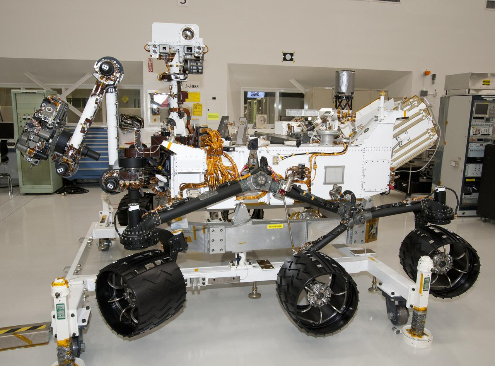

Curiosity Rover
Mission Overview
Launched: November 26, 2011
Primary mission duration: 2 years (ongoing)
Key Discoveries
- Evidence of ancient freshwater lakes
- Organic molecules in rock samples
Robotic Explorers on the Red Planet

Launched: November 26, 2011
Primary mission duration: 2 years (ongoing)
Launched: July 30, 2020
Primary mission duration: 1 Mars year (687 Earth days)